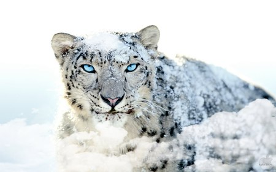
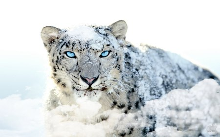

Aria Askaryar
Hi my name is Aria and welcome to my webpage/profolio. Im a first generation American from Afghan and Persian decent. I am a computer science major with emphasis in Cyber-Security. I am passionate about learning new technologies and software systems to further my knowlege in my field. I have many other intrests such as Aerospace, Linguistics, Photography, Video Production, Wolrd History and international Politics which you can see here on my page. My Acdemic goal is to finish my persue in a Masters in either Computer Science or Aerospace Engineering, and further my education. My life goal is to one day visit Afghanistan and help the people in poverity within the country and assist in teaching the new genrations of Afghans in computer science skills. I will share some photos of Afghanistan and show the things you never see about the country. I am dedicated in helping charity organization throughout the US to help young Afghan childen see a brighter future. In this page you will see photos and links of my various intrests of mine. Scroll down and enjoy:)


 



Here are some photos of Afghanistan
External links:
(Click the home button on the top to return to this page
This is a link to my first project. Its a basic page made mostly for design and has a mini game.
My Resume
This is a link to my Resume. You will be able to see more information about me such as my education, degrees, experiences, and skill sets.
National Geographics
This is a link to National Geographics one of my favorite websites. You can find a lot of amazing pictures on there. I get a lot of my inspiration from them.
My Hobbies and Interests